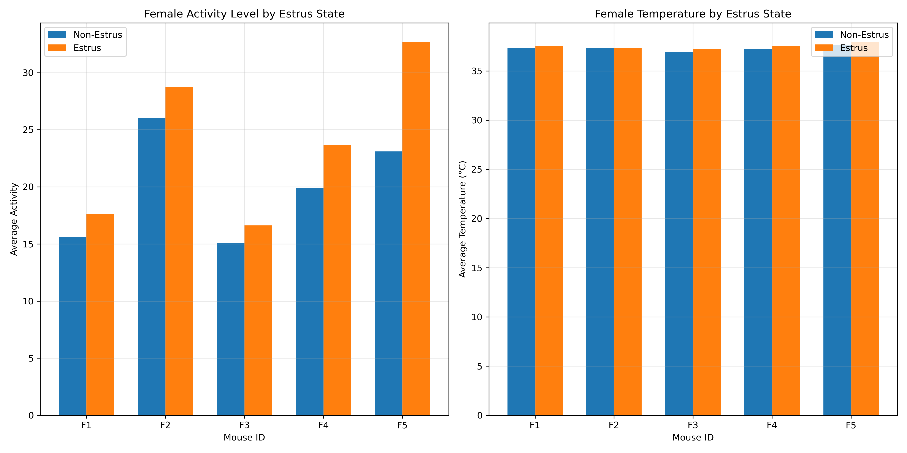

Explore the relationship between mice activity and temperature data.
Like other non-primate mammals like horses, pigs and cows, mice also have estrus cycles.
An estrus cycle is a recurring period of sexual receptivity and fertility. In easy words, female mice want to make children in this period.
While more activity and higher temperatures are expected in this period, it does not mean that the estrus period is a good indicator to predict mice activity level and temperatures.

In the figure, the Temperature is almost the same in both periods, but the activity level is much higher in the estrus period.
Still, the activity level is not a good indicator to predict the estrus period.
The reasoning can be shown in the next graph. Scroll down to see how the data points get claffified.
The PCA classifier shows that the factor which distinguishes the female activity is not the estrus periods but rather if it is day or night.
Interact with the plot below to see the detail of other mice.